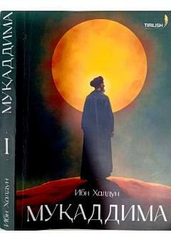

MIbn Xaldunning tarix va sivilizatsiya haqidagi buyuk asari o'zbek tilida.
Ibn Xaldunning mashhur 'Muqaddima' asari tarix ilmining mohiyati, insoniyat jamiyati va sivilizatsiyasining tabiati haqida keng qamrovli mulohazalarni o'z ichiga oladi. Asarda ko'chmanchi va o'troq xalqlar, davlatchilik, asabiyat nazariyasi, iqlim va inson xulq-atvori o'rtasidagi bog'liqlik kabi mavzular tahlil qilinadi. Bu o'zbek tilidagi tarjima Ibn Xaldunning ijtimoiy va tarixiy tafakkurini o'zbek kitobxonlariga yetkazadi.